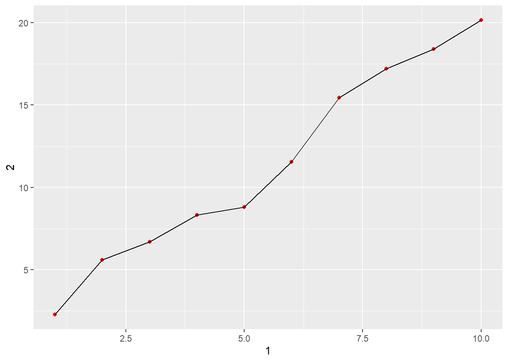
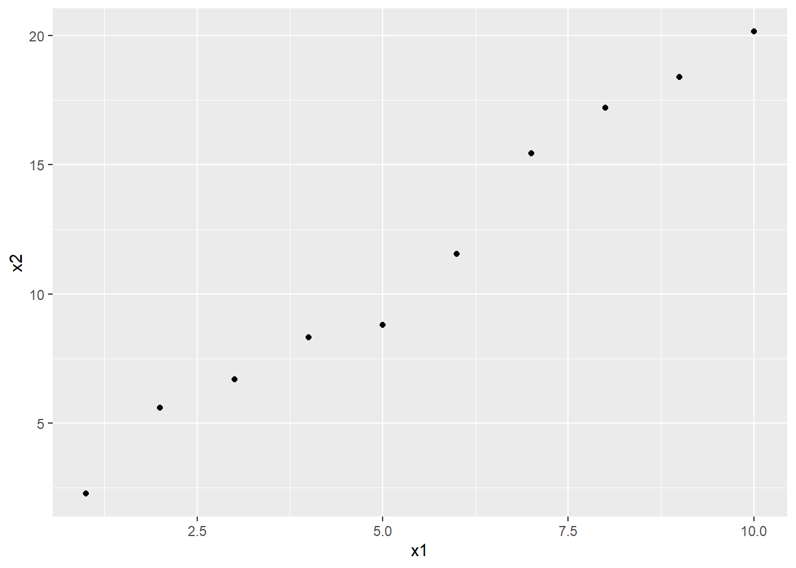

library(tidyverse)7 Data import
7.1 Introduction
In this chapter I’m learning about:
- reading plain-text rectangular files into R
- handcrafting data frames (tibbles) in R
7.1.1 Prerequisites
Install Janitor and the rest:
install.packages("janitor")library(janitor)7.2 Reading data from a file
The first file type to learn is the CSV (comma-separated values) file:
- the first row, aka the header row, contains the column names
- the columns are delimited (separated) by commas
You can read these files with read_csv(), for example:
students <- read_csv("data/students.csv")Don’t forget the quotes "" around the file path inside the ().
Here we read the students file straight from a URL:
students <- read_csv("https://pos.it/r4ds-students-csv")
students# A tibble: 6 × 5
`Student ID` `Full Name` favourite.food mealPlan AGE
<dbl> <chr> <chr> <chr> <chr>
1 1 Sunil Huffmann Strawberry yoghurt Lunch only 4
2 2 Barclay Lynn French fries Lunch only 5
3 3 Jayendra Lyne N/A Breakfast and lunch 7
4 4 Leon Rossini Anchovies Lunch only <NA>
5 5 Chidiegwu Dunkel Pizza Breakfast and lunch five
6 6 Güvenç Attila Ice cream Lunch only 6 7.2.1 Some important stuff
When importing data, inspect how missing values are represented. The na argument in read_csv() specifies which values should be interpreted as missing (NA). For example, na = c("N/A", "") treats both "N/A" and empty strings as missing.
Also check the column types, because inconsistent entries such as “five” in a numeric column can cause R to import the entire column as character data.
students <- read_csv("https://pos.it/r4ds-students-csv", na = c("N/A", ""))
students# A tibble: 6 × 5
`Student ID` `Full Name` favourite.food mealPlan AGE
<dbl> <chr> <chr> <chr> <chr>
1 1 Sunil Huffmann Strawberry yoghurt Lunch only 4
2 2 Barclay Lynn French fries Lunch only 5
3 3 Jayendra Lyne <NA> Breakfast and lunch 7
4 4 Leon Rossini Anchovies Lunch only <NA>
5 5 Chidiegwu Dunkel Pizza Breakfast and lunch five
6 6 Güvenç Attila Ice cream Lunch only 6 Non-syntactic names contain spaces or characters that make them awkward to use directly in R. Backticks let R recognise the exact column name, e.g. `Student ID`. Use rename(new_name = old_name) to give columns simpler names that are easier to use in code.
students |>
rename(
student_id = `Student ID`,
full_name = `Full Name`
)# A tibble: 6 × 5
student_id full_name favourite.food mealPlan AGE
<dbl> <chr> <chr> <chr> <chr>
1 1 Sunil Huffmann Strawberry yoghurt Lunch only 4
2 2 Barclay Lynn French fries Lunch only 5
3 3 Jayendra Lyne <NA> Breakfast and lunch 7
4 4 Leon Rossini Anchovies Lunch only <NA>
5 5 Chidiegwu Dunkel Pizza Breakfast and lunch five
6 6 Güvenç Attila Ice cream Lunch only 6 If you want the dataset itself to be rewritten, you have to assign the result back to students with <-.
Or you can use the janitor package, which seems cooler:
students |>
janitor::clean_names()# A tibble: 6 × 5
student_id full_name favourite_food meal_plan age
<dbl> <chr> <chr> <chr> <chr>
1 1 Sunil Huffmann Strawberry yoghurt Lunch only 4
2 2 Barclay Lynn French fries Lunch only 5
3 3 Jayendra Lyne <NA> Breakfast and lunch 7
4 4 Leon Rossini Anchovies Lunch only <NA>
5 5 Chidiegwu Dunkel Pizza Breakfast and lunch five
6 6 Güvenç Attila Ice cream Lunch only 6 janitor::clean_names() automatically standardises column names, usually converting them to lowercase snake case. It is useful for cleaning many column names at once, instead of renaming them one by one with rename().
What is a factor?
A factor is R’s way of representing categorical data. For example, meal_plan in students describes which meal arrangement each student belongs to. We can tell R that this column represents categories rather than just ordinary text.
students |>
janitor::clean_names() |>
mutate(meal_plan = factor(meal_plan))# A tibble: 6 × 5
student_id full_name favourite_food meal_plan age
<dbl> <chr> <chr> <fct> <chr>
1 1 Sunil Huffmann Strawberry yoghurt Lunch only 4
2 2 Barclay Lynn French fries Lunch only 5
3 3 Jayendra Lyne <NA> Breakfast and lunch 7
4 4 Leon Rossini Anchovies Lunch only <NA>
5 5 Chidiegwu Dunkel Pizza Breakfast and lunch five
6 6 Güvenç Attila Ice cream Lunch only 6 mutate() modifies the dataset by creating or replacing a column. meal_plan = factor(meal_plan) converts the existing meal_plan column into a factor.
A factor represents categorical data with a set of possible values, such as meal plans or districts. Use factor() inside mutate() to convert a character column into a factor. Factors are useful for categorical analysis, statistical modelling, and controlling category order.
Now fixing the age column, and everything else:
students <- students |>
janitor::clean_names() |>
mutate(
meal_plan = factor(meal_plan),
age = parse_number(if_else(age == "five", "5", age))
)
students# A tibble: 6 × 5
student_id full_name favourite_food meal_plan age
<dbl> <chr> <chr> <fct> <dbl>
1 1 Sunil Huffmann Strawberry yoghurt Lunch only 4
2 2 Barclay Lynn French fries Lunch only 5
3 3 Jayendra Lyne <NA> Breakfast and lunch 7
4 4 Leon Rossini Anchovies Lunch only NA
5 5 Chidiegwu Dunkel Pizza Breakfast and lunch 5
6 6 Güvenç Attila Ice cream Lunch only 6When a numeric column contains text such as “five”, R may import the entire column as character. Use if_else() to replace the inconsistent entry, then parse_number() to convert the cleaned values into numbers. mutate() applies these changes to the dataset.
Remember the structure of if_else(): if_else(condition, value_if_true, value_if_false). In our case:
- Condition:
age == "five" - If true: replace it with
"5" - If false: keep the original
agevalue
7.2.2 Other arguments
read_csv() can read text strings that are created and formatted like a CSV file, but you need to wrap the text in I(). Without I(), it won’t work:
read_csv(
"a,b,c
1,2,3
4,5,6"
)With I():
read_csv(
I("a,b,c
1,2,3
4,5,6")
)# A tibble: 2 × 3
a b c
<dbl> <dbl> <dbl>
1 1 2 3
2 4 5 6read_csv() normally treats the first line as column names. Use skip = n to ignore the first n lines when metadata appears before the dataset. Use comment = "#" to ignore lines beginning with #. These arguments help you import files that contain extra text before the actual data.
read_csv(
I("The first line of the metadata
Second line of metadata
x,y,z
1,2,3"),
skip = 2
)# A tibble: 1 × 3
x y z
<dbl> <dbl> <dbl>
1 1 2 3read_csv(
I("# A comment I wanna skip
x,y,z
1,2,3"),
comment = "#"
)# A tibble: 1 × 3
x y z
<dbl> <dbl> <dbl>
1 1 2 3Use col_names = FALSE when the input has no column headings. R will assign default column names (X1, X2, etc.) and treat the first row as data.
read_csv(
I("1,2,3
4,5,6"),
col_names = FALSE
)# A tibble: 2 × 3
X1 X2 X3
<dbl> <dbl> <dbl>
1 1 2 3
2 4 5 6You can also pass col_names a character vector, which will be used as the column names:
read_csv(
I("1,2,3
4,5,6"),
col_names = c("x", "y", "z")
)# A tibble: 2 × 3
x y z
<dbl> <dbl> <dbl>
1 1 2 3
2 4 5 6col_names in read_csv()
- By default,
read_csv()treats the first row as column names. col_names = FALSEtells it there are no column names, so it generates names likeX1,X2,X3.col_names = c("x", "y", "z")lets you supply your own column names.c()combines values into a vector.
Note
The number of names you supply should match the number of columns in the data.
7.2.3 Other file types
Meh
7.2.4 Exercises
1. What function would you use to read a file where fields were separated with “|”?
read_delim(). You can use it like this:
read_delim("my_file.txt", delim = "|")2. Apart from file, skip, and comment, what other arguments do read_csv() and read_tsv() have in common?
col_names: specifies the column names, or whether the first row contains them.col_types: lets you specify the data type for each column.- …and more.
3. Sometimes strings in a CSV file contain commas. To prevent them from causing problems, they need to be surrounded by a quoting character, like " or '. By default, read_csv() assumes that the quoting character will be ". To read the text "x,y\n1,'a,b'" into a data frame, what argument to read_csv() do you need to specify?
read_csv(I("x,y\n1,'a,b'"), quote = "'")# A tibble: 1 × 2
x y
<dbl> <chr>
1 1 a,b \n means “start a new row”. It stands for a newline.
4. Practice referring to non-syntactic names in the following data frame by:
annoying <- tibble(
`1` = 1:10,
`2` = `1` * 2 + rnorm(length(`1`))
)
annoying# A tibble: 10 × 2
`1` `2`
<int> <dbl>
1 1 2.27
2 2 5.60
3 3 6.70
4 4 8.33
5 5 8.81
6 6 11.5
7 7 15.4
8 8 17.2
9 9 18.4
10 10 20.2 a. Extracting the variable called 1.
annoying |>
select(1)# A tibble: 10 × 1
`1`
<int>
1 1
2 2
3 3
4 4
5 5
6 6
7 7
8 8
9 9
10 10annoying |>
pull(1) [1] 1 2 3 4 5 6 7 8 9 10Note that a bare 1 here means the position of the column, which happens to pick the column named 1. To refer to the column by its name, use backticks (see below).
b. Plotting a scatterplot of 1 vs. 2.
ggplot(annoying, aes(`1`, `2`)) +
geom_point(colour = "red") +
geom_line()
or
annoying |>
janitor::clean_names() |>
ggplot(aes(x1, x2)) +
geom_point()
c. Creating a new column called 3, which is 2 divided by 1.
annoying |>
mutate(
`3` = `2` / `1`
)# A tibble: 10 × 3
`1` `2` `3`
<int> <dbl> <dbl>
1 1 2.27 2.27
2 2 5.60 2.80
3 3 6.70 2.23
4 4 8.33 2.08
5 5 8.81 1.76
6 6 11.5 1.92
7 7 15.4 2.21
8 8 17.2 2.15
9 9 18.4 2.04
10 10 20.2 2.02d. Renaming the columns to one, two, and three.
annoying |>
mutate(`3` = `2` / `1`) |>
rename(
one = `1`,
two = `2`,
three = `3`
)# A tibble: 10 × 3
one two three
<int> <dbl> <dbl>
1 1 2.27 2.27
2 2 5.60 2.80
3 3 6.70 2.23
4 4 8.33 2.08
5 5 8.81 1.76
6 6 11.5 1.92
7 7 15.4 2.21
8 8 17.2 2.15
9 9 18.4 2.04
10 10 20.2 2.02Syntactic vs. non-syntactic names
Syntactic names (these work as they are):
agetotal_scorestudent_id
Non-syntactic names (these don’t follow R’s usual naming rules):
student name: contains a spacetotal-score: contains a hyphenif: a reserved word in R, so an absolute no-no
Backticks help. They tell R to treat the text as a name, even though it doesn’t follow the usual naming rules.
annoying |>
pull(`1`) [1] 1 2 3 4 5 6 7 8 9 10Here `1` literally means the name “1”. Without the backticks, R may interpret 1 as the numeric value one rather than as a column name.
You can use backticks with names containing spaces, too:
annoying_data <- tibble(
`student name` = c("John", "Mary")
)
annoying_data |>
pull(`student name`)[1] "John" "Mary"7.3 Controlling column types
7.3.1 Guessing types
read_csv() uses type guessing to determine the type of each column when importing data:
- Logical:
TRUE,FALSE,T,F - Numeric:
1,-4.5,5e6,Inf - Date/date-time: values matching recognised date or date-time formats, such as
2021-01-15 - Character: text values that don’t fit the other recognised types
readr examines a sample of rows and ignores missing values when guessing.
Important
The guessed type may not match the real-world meaning of the data. For example, numbers representing categories may need to be stored as factors or character values instead.
example_data <- read_csv(I("
logical,numeric,date,string
TRUE,1,2021-01-15,abc
false,4.5,2021-02-15,def
T,Inf,2021-02-16,ghi
"))
glimpse(example_data)Rows: 3
Columns: 4
$ logical <lgl> TRUE, FALSE, TRUE
$ numeric <dbl> 1.0, 4.5, Inf
$ date <date> 2021-01-15, 2021-02-15, 2021-02-16
$ string <chr> "abc", "def", "ghi"7.3.2 Missing values, column types, and problems
One way column detection fails is when a column contains unexpected values and you get a character column (chr) instead of a specific type, for instance numeric. The most common cause is using something other than NA for missing values, which is what readr expects.
simple_csv <- "
x
10
.
20
30"Missing values can be represented by a bunch of things, e.g. ., "N/A", "Missing". You can tell readr which representations mean missing:
read_csv(
"my_file.csv",
na = c(".", "N/A", "Missing", "-")
)To fix the problem in the simple_csv example above, you can tell readr that x is a numeric column with the col_types argument:
df <- read_csv(
I(simple_csv),
col_types = list(x = col_double())
)Warning: One or more parsing issues, call `problems()` on your data frame for details,
e.g.:
dat <- vroom(...)
problems(dat)read_csv() shows that there is a problem. You can check the problem like so:
problems(df)# A tibble: 1 × 5
row col expected actual file
<int> <int> <chr> <chr> <chr>
1 3 1 a double . C:/Users/Noel/AppData/Local/Temp/Rtmp0ugWFz/vroom…This tells us there was a problem in row 3, column 1, where readr expected a double but got a .. That suggests this dataset uses . for missing values. So we set na = ".", the automatic guessing succeeds, and we get the numeric column that we want:
read_csv(I(simple_csv), na = ".")# A tibble: 4 × 1
x
<dbl>
1 10
2 NA
3 20
4 307.3.3 Column types
The nine column types
| Function | What it tells readr to do |
|---|---|
col_logical() |
Read values as TRUE or FALSE. |
col_double() |
Read values as numeric, including decimals. |
col_integer() |
Read values as whole numbers. |
col_character() |
Read values as text. |
col_factor() |
Read values as categories. |
col_date() |
Read values as dates. |
col_datetime() |
Read values as dates and times. |
col_number() |
Extract numbers from text that may contain other characters. |
col_skip() |
Leave a column out of the imported data. |
Something important to note about col_character()
Imagine a dataset containing phone numbers:
phone
0991234567
0887654321They’re digits, but you would not calculate with them. They are identifiers, not quantities.
readr can read them as numbers, and then you could lose the leading 0s. This can be prevented by explicitly reading the column as text:
read_csv(
I("phone\n0993316569\n0882940298\n0888131768"),
col_types = cols(phone = col_character())
)# A tibble: 3 × 1
phone
<chr>
1 0993316569
2 0882940298
3 0888131768Reading them as integers instead drops the leading zeros (just an illustration of what you’d lose):
read_csv(
I("phone
0993315684
0987437973
038084"),
col_types = cols(phone = col_integer())
)# A tibble: 3 × 1
phone
<int>
1 993315684
2 987437973
3 38084What is the difference between list() and cols()?
With list(), you are explicitly telling readr to treat column x as a double:
read_csv(
I("x\n10\n30\n67"),
col_types = list(x = col_double())
)# A tibble: 3 × 1
x
<dbl>
1 10
2 30
3 67With cols():
another_csv <- "
x,y,z
1,2,3"
read_csv(
I(another_csv),
col_types = cols(.default = col_character())
)# A tibble: 1 × 3
x y z
<chr> <chr> <chr>
1 1 2 3 This gives you a simple tibble. The new argument is .default = col_character(), which means: “Unless I specify otherwise, read every column as character.”
Or you can specify it as you create the CSV:
more_tibble <- read_csv(
I("x,y,z
34,64,98"),
col_types = cols(.default = col_character())
)
more_tibble# A tibble: 1 × 3
x y z
<chr> <chr> <chr>
1 34 64 98 The values will be characters even though they look like numbers, so no maths on them, lol.
More comparison between the two:
# list(): specify the type of column x, while other columns
# can still use type guessing
col_types = list(x = col_double())
# cols(): set a default type for all columns.
# You can also override individual columns.
col_types = cols(.default = col_integer())For instance, below we make every column read as character by default, except age, which we want to be numeric:
one_more <- read_csv(
I("name,age,id
Yohane,34,001
Luka,56,002
Mateyu,89,003"),
col_types = cols(
.default = col_character(),
age = col_double()
)
)
one_more# A tibble: 3 × 3
name age id
<chr> <dbl> <chr>
1 Yohane 34 001
2 Luka 56 002
3 Mateyu 89 003 .default sets the general rule, while age = col_double() overrides it for one column.
What is cols_only()?
This chooses which columns to import, rather than just their type. It’s kind of like select().
read_csv(
I(another_csv),
col_types = cols_only(x = col_character())
)# A tibble: 1 × 1
x
<chr>
1 1 another_csv[1] "\nx,y,z\n1,2,3"This tells readr to import only column x and read it as character. Columns y and z are not included in the resulting tibble.
The distinction:
cols()lets you specify types and defaults for columns, while leaving unspecified columns to the default type-guessing behaviour.cols_only()tells readr which columns to import. Only the specified columns are included.